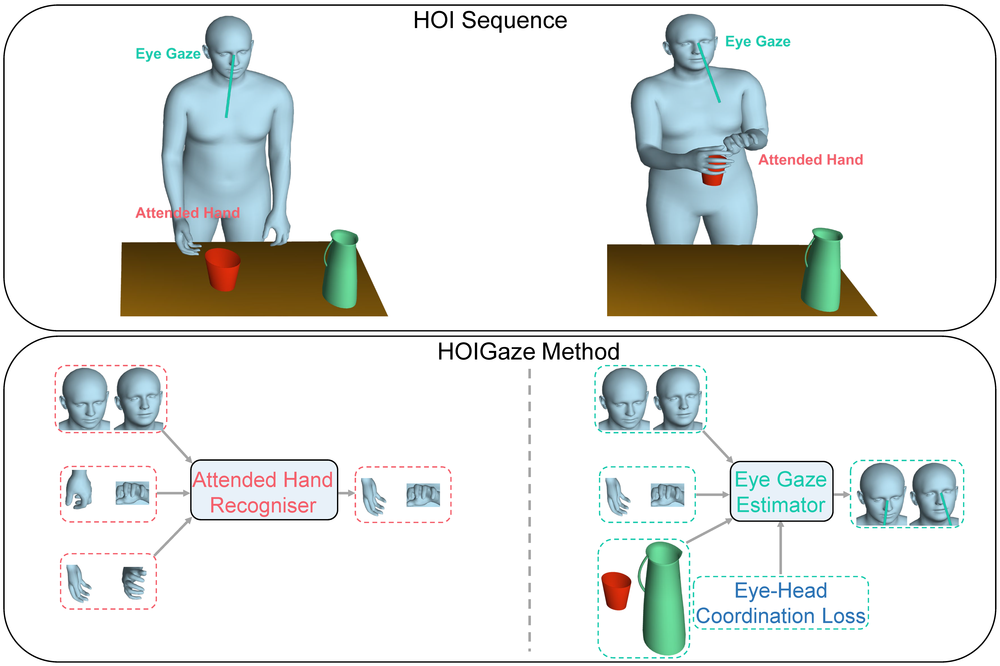

HOIGaze: Gaze Estimation During Hand-Object Interactions in Extended Reality Exploiting Eye-Hand-Head Coordination
Zhiming Hu, Daniel Haeufle, Syn Schmitt, Andreas Bulling
Proceedings of the ACM Special Interest Group on Computer Graphics and Interactive Techniques (SIGGRAPH), 2025: 1-10.

Abstract
We present HOIGaze – a novel learning-based approach for gaze estimation during hand-object interactions (HOI) in extended reality (XR). HOIGaze addresses the challenging HOI setting by building on one key insight: The eye, hand, and head movements are closely coordinated during HOIs and this coordination can be exploited to identify samples that are most useful for gaze estimator training – as such, effectively denoising the training data. This denoising approach is in stark contrast to previous gaze estimation methods that treated all training samples as equal. Specifically, we propose: 1) a novel hierarchical framework that first recognises the hand currently visually attended to and then estimates gaze direction based on the attended hand; 2) a new gaze estimator that uses cross-modal Transformers to fuse head and hand-object features extracted using a convolutional neural network and a spatio-temporal graph convolutional network; and 3) a novel eye-head coordination loss that upgrades training samples belonging to the coordinated eye-head movements. We evaluate HOIGaze on the HOT3D and Aria digital twin (ADT) datasets and show that it significantly outperforms state-of-the-art methods, achieving an average improvement of 15.6% on HOT3D and 6.0% on ADT in mean angular error. To demonstrate the potential of our method, we further report significant performance improvements for the sample downstream task of eye-based activity recognition on ADT. Taken together, our results underline the significant information content available in eye-hand-head coordination and, as such, open up an exciting new direction for learning-based gaze estimation.Presentation Video
Demo Video
Links
BibTeX
@inproceedings{hu25hoigaze,
title={HOIGaze: Gaze Estimation During Hand-Object Interactions in Extended Reality Exploiting Eye-Hand-Head Coordination},
author={Hu, Zhiming and Haeufle, Daniel and Schmitt, Syn and Bulling, Andreas},
booktitle={Proceedings of the ACM Special Interest Group on Computer Graphics and Interactive Techniques},
year={2025},
pages = {1--10}}